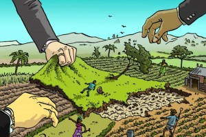

At the start of the 20th century, did you know that Henry Ford was planning on running his Model Ts with ethanol,or that diesel engines in the early days were run on peanut oil?
Biofuels are basically a type of fuel made by living matter.
The process of creating biofuel can differ, but it mostly consists of:
It can sometimes take more energy to process the plants and creating pesticides and fertilizers than it actually provides. Also, in the process of making biofuels, you also use coal and natural gases to create biofuels, so they really don’t replace as much oil as they use.
One of the social impacts of biofuels is land grabbing, which is when you take land from another nation unfairly or illegally. Now food sources and fuel fight for land and most of the times, the countries are already hard-pressed when it comes to food prices and land conflict. In fact, in Borneo, some of its land has already been taken b\multinationals, and are now lands for the agricultural use of growing palm oil.
